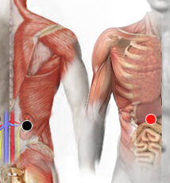

Espiroquetas
riñon (D) - conducto vesícula
clítoris - clítoris*
riñón (I) - conducto de páncreas
borde costal(D) - hígado
costohepático - costohepático
píloro - estómago
clítoris - sacro
clítoris - hueso púbico

Nota: También revisar como uretra - clítoris
Generalidades:
Provoca trastornos pélvicos, trastornos sexuales, irritación rectal, sangrado. También se pueden presentar síntomas como: migrañas, artritis, parálisis facial, fibromialgia, lúmbago, síndrome del túnel del carpo, fatiga crónica.
En realidad se trata de varias especies de bacterias, protozoos con forma espiral; como son la Leptospira (Leptospirosis), Borrelia (Borreliosis), Treponema Pallidum (sífilis), Ricketsia.
Transmisión:
Se pueden considerar enfermedades de transmisión sexual, aunque algunos otros tipos de contagio son menos frecuentes.